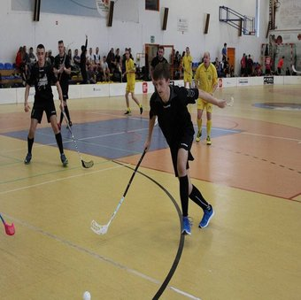

Technologie i certyfikaty
Mówi się, że dobry programista uczy się przez całą karierę. Swoją wiedzę staram się udokumentować certyfikatami czy projektami (m.in takimi jak to portfolio). Do swoich umiejętności podchodzę z znaczną dozą pokory, ponieważ w swojej ścieżce zawodowej stawiam na nieustający rozwój i możliwość uczenia się nowych rzeczy. Za to pokochałem ten zawód.
HTML80%
Wordpress80%
SQL60%
CSS50%
PHP 20%
Javascript 20%
-
04.2018-10.2018
CEVA Logistics
Air Cargo Specialist
Heerlen, Holandia -
02.2016-06.2018
Cyfrowy Polsat S.A/Plus Sp. z o.o
Doradca klienta
Toruń, Polska -
10.2011-04.2016
Klub Hokejowy KS Nesta Toruń / Miejski Ośrodek Sportu i Rekreacji Toruń
Dział PR/Obsługa techniczna
Toruń, Polska
-
10.2016 - do dziś
Uniwersytet Mikołaja Kopernika w Toruniu
Dziennikarstwo i komunikacja społeczna
specjalizacja - Nowe Media
Umiejętności i zalety
Umiejętność efektywnego zarządzania własną pracą
Kreatywność
Umiejętność pracy w grupie
Komunikatywność
Ciągła chęć rozwoju
Zainteresowania
W swoim życiu staram się być maksymalistą. Jeśli już coś robię, chce dać z siebie 100%, inaczej to nie ma sensu! Oto kilka innych pasji, którym się poświęcam.

Programowanie



Unihokej